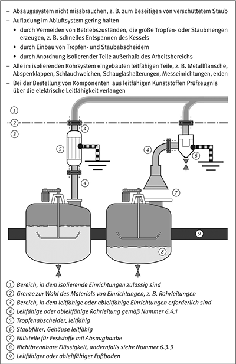

(1) Die Bewegung reiner Gase oder Gasgemische erzeugt keine elektrostatische Aufladung. Enthält ein Gasstrom jedoch Feststoffpartikel oder Flüssigkeitströpfchen, können diese sowie alle betroffenen Anlagenteile und Gegenstände aufgeladen werden.
Hinweis:
Prozesse, die zu beträchtlichen elektrostatischen Aufladungen führen können, sind der pneumatische Transport, das Freisetzen von Druckgas mit Partikeln, das Ausströmen von flüssigem Kohlendioxid, der Einsatz von industriellen Staubsaugern oder das Spritzlackieren.
(2) Solche Prozesse können zu zündwirksamen Funkenentladungen, Büschelentladungen, Gleitstielbüschelentladungen oder Schüttkegelentladungen führen.
Hinweis:
Siehe auch Anhang A3.
(3) Die Aufladung der Partikel selbst kann nicht vermieden werden. Zusätzlich zur Vermeidung isolierender Materialien sind folgende Maßnahmen geeignet, gefährliche Aufladungen zu verhindern:
Werden in explosionsgefährdeten Bereichen Sandstrahlarbeiten durchgeführt oder kann beim Sandstrahlen explosionsfähige Atmosphäre entstehen, dürfen nur leitfähige Sandstrahlgeräte benutzt werden. Alle leitfähigen Teile der Sandstrahlgeräte, insbesondere die am Ende des Schlauches befestigte Düse, müssen geerdet sein. Einzelne Anlagenteile, z. B. Schläuche, müssen mindestens ableitfähig und mit anderen geerdeten Anlagenteilen elektrisch leitend verbunden sein.
Hinweis:
Durch diese Maßnahmen werden Funkenentladungen sicher vermieden. Trotzdem kann sich verfahrensbedingt das Strahlmittel aufladen. Liegen Gefahrstoffe der Explosionsgruppe II vor, sind – wegen möglicher Büschelentladungen – weitere Maßnahmen, notwendig. Ggf ist die Gefährdungsbeurteilung im Hinblick auf die Vermeidung gefährlicher explosionsfähiger Gemische, z. B. durch Inertisierungsmaßnahmen, zu wiederholen.
(1) Feuerlöscher und Feuerlöschanlagen, deren Löschmittel sich beim Austritt aufladen können, dürfen in explosionsgefährdeten Bereichen nur dann zu Testzwecken ausgelöst werden, wenn sichergestellt ist, dass keine explosionsfähige Atmosphäre vorhanden ist.
Hinweis:
Z. B. können Wolken aus Löschpulver oder entspanntem Kohlendioxid gefährlich aufgeladen sein.
(2) Inertgasfeuerlöschanlagen, deren Gas, z. B. CO2, sich beim Austritt auflädt, dürfen bei vorhandener explosionsfähiger Atmosphäre nicht ausgelöst werden.
Hinweis:
Eine bereits vorhandene explosionsfähige Atmosphäre soll nicht durch vorbeugendes Einbringen des Löschmittels entzündet werden. Im Brandfall ist nicht mehr von einer explosionsfähigen Atmosphäre auszugehen.
Zum Inertisieren bereits vorhandener explosionsfähiger Atmosphäre darf das Inertisierungsmedium nur so eingebracht werden, dass keine gefährlichen Aufladungen auftreten. Eine Bildung von Nebel oder Sublimat sowie das Aufwirbeln von Stäuben sind zu vermeiden.
Hinweis:
Nassdampf oder CO2 eignen sich in diesen Fällen nicht als Inertisierungsmedium. Inertgas soll feststofffrei und langsam durch möglichst große Öffnungen eingeleitet werden. Ein Mitreißen von Schmutz, Kondensat oder Anbackungen aus den Leitungen ist zu vermeiden.
(1) Gefährliche Aufladungen können entstehen, wenn Gase Flüssigkeitströpfchen, feste Partikel oder einen hohen Sattdampfanteil enthalten. Besteht die Möglichkeit, dass z. B. durch Leckagen in Systemen, die brennbare Gase führen, explosionsfähige Atmosphäre entsteht, sind alle leitfähigen Einrichtungen, z. B. Gefäße oder Rohre, die solche Gase enthalten, sowie alle benachbarten oder angrenzenden leitfähigen Teile zu erden.
(2) Personen, die einen solchen Bereich, z. B. zur Ausführung von Reparaturen, betreten sowie die von ihnen mitgeführten leitfähigen Teile sind ebenfalls zu erden. Isolierende Teile sollen in einen solchen Bereich nicht eingebracht werden.
(1) Beim Verspritzen oder Versprühen von Flüssiglacken oder Pulverlacken sowie beim Beflocken werden Sprühwolken von Tröpfchen oder Feststoffteilchen erzeugt, welche oft elektrostatisch aufgeladen sind. Dies gilt insbesondere dann, wenn die Aufladung durch Hochspannung oder triboelektrisch bewusst erzeugt wird. Da die Sprühwolken oft brennbar sind, besteht Zündgefahr und die folgenden Maßnahmen sind erforderlich:
(2) Beim Beflocken ohne brennbare Klebstoffe ist nicht mit einer Zündgefahr ausgehend vom Flock selbst zu rechnen.
Hinweis:
Flock kann jedoch durch Funkenentladung von Flockelektroden gezündet werden, insbesondere bei der Beflockung mit Wechselstrom.
(1) Abluft- und Abgassammelsysteme sind in explosionsgefährdeten Bereichen so zu verlegen und zu betreiben, dass sie nicht gefährlich aufgeladen werden können. Anforderungen siehe auch Nummer 6.4. Systeme aus leitfähigen Materialien müssen geerdet sein; zusätzliche Maßnahmen sind in der Regel nicht erforderlich.
(2) Leitungen aus isolierendem Material sind
(3) Alle in einem isolierenden Leitungssystem befindlichen leitfähigen Teile, z. B. Ventile oder Rückschlagklappen, sind zu erden.
(1) Staubsauger und Staubsauganlagen können hohe Ladungsdichten erzeugen und selbst gefährlich aufgeladen werden.
Hinweis:
Als Staubsauger werden hier ortsbewegliche und als Staubsauganlagen ortsfeste Einrichtungen verstanden.
(2) Staubberührte Teile von Staubsaugern und Staubsauganlagen müssen aus leitfähigen oder ableitfähigen Teilen bestehen. Die leitfähigen Teile sind zu erden, insbesondere leitfähige Saugdüsen. Alle ableitfähigen Teile müssen mit leitfähigen verbunden sein, so dass Erdkontakt besteht.
(3) Bei Stäuben mit einer MZE ≤ 3 mJ ist die Verwendung ableitfähiger Filtergewebe erforderlich. Es ist sicherzustellen, dass der Staubsammelbehälter während des gesamten Betriebes, auch beim Entleeren, geerdet bleibt. Staubsauger und Staubsauganlagen dürfen nicht zum Aufnehmen lösemittelhaltiger Stäube eingesetzt werden oder wenn die Gefahr der Bildung brennbarer Gase besteht.
(4) Staubsauger, die nicht geerdet werden können oder die keine leitfähige Verbindung zwischen Saugdüse und Sammelbehälter aufweisen, dürfen weder in explosionsgefährdeten Bereichen noch zum Aufsaugen brennbarer Stäube eingesetzt werden.
(5) Rohrleitungen oder Schläuche müssen die Anforderungen nach Nummer 6.4. erfüllen.

Hinweis:
Staubsauger können mit Hilfe des Netzkabels oder über einen leitfähigen Druckluftschlauch geerdet werden.